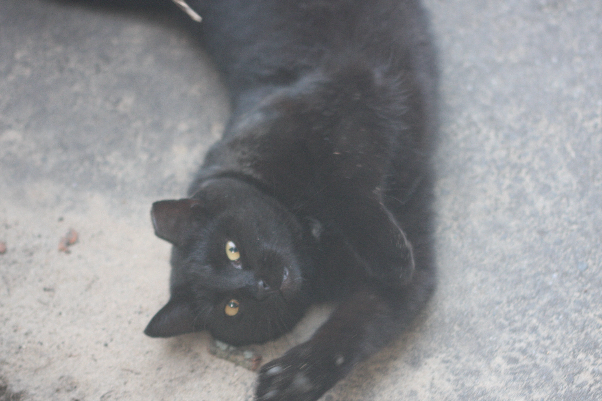

name
hi! my name is Isaiah.
background info
I grew up in Minnesota and have lived there my entire life.
hobbies & interests outside of school
some of my hobbies and interests outside of school include programming for fun (working on the website for The Skewer), finding niche retro video games, and playing the piano.
plans after high school
my plans after high school are to not go to college, but instead find work right away and use my previous knowledge alongside my (hopefully) completed CS50 course to get a job in the tech industry. I'd like to get into wither software engineering or web development, but I'm kinda open to most programming jobs at the moment. I just joined Robotics as a programmer (FRC3407), so that should be some nice resumé candy.
current or past work experience
I've worked at a local farm for the past few years, at Fresh and Natural Foods before the Shoreview location closed in September 2022, and over the summer I worked at the State Fair.
dream vacation
I really haven't thought about this that much, though I'd probably like to go to Australia or New Zealand at some point. I've always found Oceania to have really interesting culture and history.
if you'd like to learn more about the Oceania area, please see here or click the map below.
favorite quote
I don't have a favorite quote, but please enjoy instead a small collection of my favorite quotes:
the quotes
“Life … is like a grapefruit. It's orange and squishy, and has a few pips in it, and some folks have half a one for breakfast.” — Douglas Adams
“Only one man in a thousand is a leader of men. The other 999 follow women.” — Groucho Marx
“In the first place, God made idiots. That was for practice. Then he made school boards.” — Mark Twain
“Always do sober what you said you'd do drunk. That will teach you to keep your mouth shut.” — Ernest Hemingway
“There is no reason for any individual to have a computer in his home.” — Ken Olsen, president, Digital Equipment Corporation, 1977
- Uninspired last words: (from Futility Closet)
“Wait a minute …” — Pope Alexander VI
“Am I dying, or is this my birthday?” — Nancy, Lady Astor, on seeing her family at her bedside
“I live!” — Caligula, as he was being murdered by his own soldiers
“Lady, you shot me!” — Sam Cooke, after being shot in a hotel room
“That guy's got to stop. … He'll see us.” — James Dean, before a car accident
“I'd hate to die twice. It's so boring.” — Richard Feynman
“I think I'm going to make it!” — murderer Richard Loeb, after being slashed 90 times with a razor
“Die, my dear? Why that's the last thing I'll do!” — Groucho Marx
“I'm all right.” — H.G. Wells
On his deathbed Stan Laurel said, “I wish I were skiing.” His nurse said, “Oh, Mr. Laurel, do you ski?” Laurel replied, “No, but I'd rather be skiing than doing what I'm doing.”
“Only two things are infinite, the universe and human stupidity, and I'm not sure about the former.” — Albert Einstein
“Tragedy is when I cut my finger. Comedy is when you fall into an open sewer and die.” — Mel Brooks
“Don't just do something, stand there.” — Clint Eastwood's acting coach
“A country can be judged by the quality of its proverbs.” — German proverb
“Life is tough. It's even tougher if you're stupid.” — John Wayne
“Poets have been mysteriously silent on the subject of cheese.” — G.K. Chesterton
“Computers in the future may weigh no more than 1.5 tons.” — Popular Mechanics, 1949
“Chess is as elaborate a waste of human intelligence as you can find outside an advertising agency.” — Raymond Chandler
“There's just some people you don't hit with a pie and that's all there is to it.” — Buster Keaton
- Memorable sportscasting quotes:
“And here's Moses Kiptanui, the 19-year-old Kenyan, who turned 20 a few weeks ago.” (David Coleman)
“Juantorena opens his legs and shows his class.” (Ron Pickering)
“With half of the race gone, there is half of the race still to go.” (Murray Walker)
“What I said to them at halftime would be unprintable on the radio.” (Gerry Francis)
“I was in Saint-Etienne two years ago. It's much the same as it is now, although now it's completely different.” (Kevin Keegan)
“I imagine that the conditions in those cars are totally unimaginable.” (Murray Walker)
“The Baggio brothers, of course, are not related.” (George Hamilton)
“For those of you watching in black and white, Spurs are in the all-yellow strip.” (John Motson)
“Real Madrid are like a rabbit in the glare of the headlights in the face of Manchester United's attacks,” Hamilton once said. “But this rabbit comes with a suit of armor in the shape of two precious away goals …”
“One martini is all right. Two are too many, and three are not enough.” — James Thurber
“What luck for rulers that men do not think.” — Adolf Hitler
“My toughest fight was with my first wife.” — Muhammad Ali
“All music is folk music. I ain't never heard no horse sing a song.” — Louis Armstrong
Oscar Wilde: “Do you mind if I smoke?”
Sarah Bernhardt: “I don't care if you burn.”
“If at first you don't succeed, try, try again. Then give up. No use being a damned fool about it.” — W.C. Fields
“In keeping with Channel 40's policy of bringing you the latest in blood and guts in living color, we bring you another first, an attempted suicide.” — Florida newscaster Christine Chubbuck, before shooting herself on live television, July 15, 1974
“I can't listen to that much Wagner. I start getting the urge to conquer Poland.” — Woody Allen
“Finally I am becoming stupider no more.” — Mathematician Paul Erdős, suggested epitaph for himself
“Listening to the Fifth Symphony of Vaughan Williams is like staring at a cow for 45 minutes.” — Aaron Copland
“Any man who can drive safely while kissing a pretty girl is simply not giving the kiss the attention it deserves.” — Albert Einstein
“Only kings, presidents, editors, and people with tapeworms have the right to use the editorial 'we.'” — Mark Twain
“I love deadlines. I like the whooshing sound they make as they fly by.” — Douglas Adams
“Life is a moderately good play with a badly written third act.” — Truman Capote
“I don't even know what street Canada is on.” — Al Capone
“When I see a pretty girl walking down the street, I think two things: One part of me wants to take her home, be real nice and treat her right; the other part wonders what her head would look like on a stick.” — Serial killer Edmund Kemper
“I mean, it's a great story. It's got some great things in it. I mean, there's something like eight violent deaths.” — Mel Gibson, on reasons to like Hamlet
“I remember Tallulah [Bankhead] telling of going into a public ladies' room and discovering there was no toilet tissue. She looked underneath the booth and said to the lady in the next stall, 'I beg your pardon, do you happen to have any toilet tissue in there?' The lady said no. So Tallulah said, 'Well, then, dahling, do you have two fives for a ten?'” — Ethel Merman
“How can one conceive of a one-party system in a country that has over 200 varieties of cheese?” — Charles de Gaulle
“It's just a job. Grass grows, birds fly, waves pound the sand. I just beat people up.” — Muhammad Ali
- Controversial remarks attributed to Prince Philip, Duke of Edinburgh:
“If it has four legs and is not a chair, has wings and is not an aeroplane, or swims and is not a submarine, the Cantonese will eat it.”
When visiting China in 1986, he told a group of British students, “If you stay here much longer, you'll all be slitty-eyed.”
To a British student in Papua New Guinea: “You managed not to get eaten then?”
To a Scottish driving instructor: “How do you keep the natives off the booze long enough for them to pass the driving test?”
On a visit to the new Welsh Assembly in Cardiff, he told a group of deaf children standing next to a Jamaican steel drum band, “Deaf? No wonder you are deaf, standing so close to that racket.”
To an Australian aborigine: “Still throwing spears?”
To the president of Nigeria, who was dressed in traditional Muslim robes: “You look like you're ready for bed.”
Seeing a poorly installed fusebox in an Edinburgh factory, Philip said it looked “like it was put in by an Indian.”
When a 12-year-old boy told the prince that he aspired to be an astronaut, he replied, “You're too fat.”
Overheard during an extended tour of HMS Boxer: “Not another fucking chamber.”
“An ugly baby is a very nasty object, and the prettiest is frightful when undressed.” — Queen Victoria
“The embarrassing thing is that the salad dressing is out-grossing my films.” — Paul Newman
“Nothing.” — Louis XVI (Diary entry for July 14, 1789, the day of the storming of the Bastille.)
“There are four kinds of homicide: felonious, excusable, justifiable, and praiseworthy.” — Ambrose Bierce
“Of all the noises known to man, opera is the most expensive.” — Moliere
“Winfield goes back to the wall. He hits his head on the wall and it rolls off! It's rolling all the way back to second base! This is a terrible thing for the Padres!” — Sportscaster Jerry Coleman
“I hate quotations.” — Emerson
“Never interrupt your enemy when he is making a mistake.” — Napoleon
“When in doubt, have two guys come through the door with guns.” — Raymond Chandler
STREETS FULL OF WATER. PLEASE ADVISE.
— Robert Benchley, telegram from Venice“Communism is like one big phone company.” — Lenny Bruce
“I love Mickey Mouse more than any woman I've ever known.” — Walt Disney
“I hate women because they always know where things are.” — James Thurber
“No one can earn a million dollars honestly.” — William Jennings Bryan
pets (past, present, & future)
I have had six pets in the past.
Sally — a German Shorthaired Pointer mutt. I know this is cliché but she was literally the best dog ever. Died on May 6th, 2017 from sodium pentobaribital, lest she die of liver failure.
Rosie — a Rhodesian Ridgeback/Boxer/probably some lab mutt. We got her shortly after Sally died, but she was a bit aggressive so we had to return her or something idk I didn't pay too much attention I was still grieving
Кошка — a Chinese Dwarf Hamster. so there. very uneventful life.
Blue — a black American Shorthair that "follwed my mom and sisters home" from their stay at Blue Mounds State Park in September 2017. He was incredible; very photogenic, loved hunting but also cuddling, etc. not that I'd pick favorites, but he was definitely my favorite (:
unfortunately got hit by a car on May 7th this year so that's not fun
anyways we got some new mousers recently, and they're getting to be some fine bois:
-
Peter — tuxedo flavored cat (see 2.4)

-
Andrew — Garfield knock off (see 2.4)
favorite ice cream flavor
I really like Big Dipper's Licorice flavor, though if I want people to perceive me as slightly more sane I'd probably go with Rum Cherry.
something I'm really good at doing
I'm pretty good at playing the piano. I've been playing and taking lessons for 12 years now, and I think it shows.
something I'm terrible at (subjectively)
I don't know if there's anything I'm terrible at; if there's anything I'm "terrible" at it's just because I haven't learned how to do it well (or at all) yet. That's generally my mindset for most things.